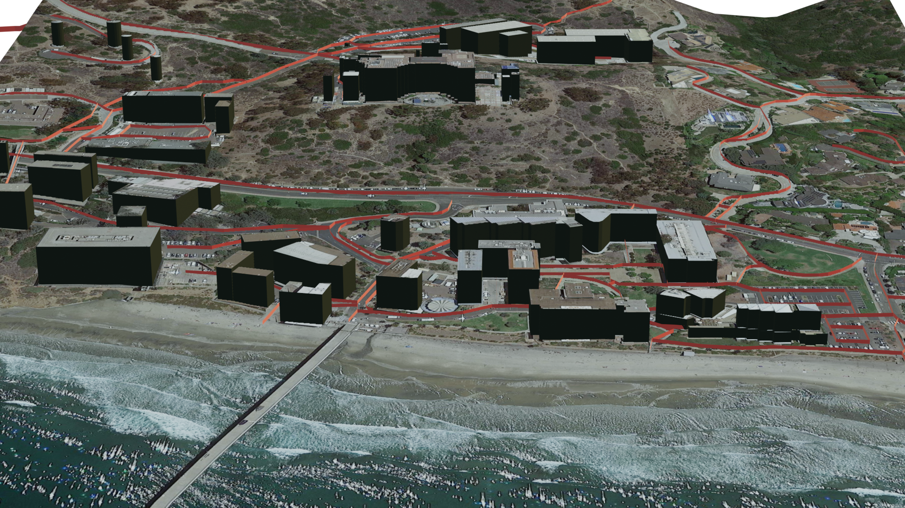
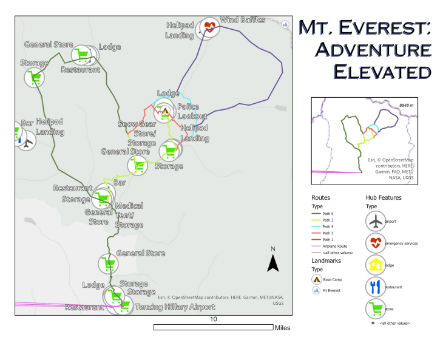

IEGIS
Organization (2022)
The Inland Empire GIS User Group is a collective of GIS professionals in the region.
I have been featured in their Spotlight Interview.
I was chosen to present my current GIS projects at the 2022 IEGIS December meeting, held at the ESRI headquarters.
Riverside Wildfire Monitor
Academic Project (2022)
This Web Experience was used to monitor current wildfire data in Riverside County.
Interactive widgets allow viewers to click to focus on specific incidents, view graphics, and compare with a temperature raster data to draw their own conclusions.
Tools used: ArcGIS Online, ArcGIS Experience Builder
Menifee Water Map
Academic Project (2022)
This project tells a Story about local water supply in my region.
Topics covered include the history of water transportation and the environmental obstacles to overcome.
Tools used: ArcGIS Online, ArcGIS Pro, ArcGIS Story Maps
City Planning Project
Academic Project (2022)
The city planning project develops thematic and navigational maps, such as population, traffic, and zoning.
The prompt of this project entails creating various city planning maps for a fictional 'City of Blue.'
This Web App creates an interactive experience for viewers, focusing on regions and layers.
The final Development Plan includes reports and maps of included features of the city.
Tools used: ArcGIS Pro, ArcGIS Experience Builder
With the 501-c3 nonprofit organization Tree San Diego, I contributed to several projects through an academic internship.
With the Branch Out San Diego project, I developed outreach and Social Media products.
To collect and edit field data for the organization, I used the Tree Plotter application.
In order to record my experience with the internship, I created a Community Impact Report
Tools used: ArcGIS, Microsoft Excel, TreePlotter App, Autodesk Sketchbook
Temperature Range Animation Creator (TRAC)
Academic project (2020)
The TRAC project enables users to create temperature range animations within a python notebook.
Viewers can access the animation notebook and python source file.
The Gonzalez_M_TRAC.ipynb file hosts the interactive product, while the anom.py file contains the source code for the project.
The project uses NetCDF4 data from NOAA, also accessible from the TRAC repository.
Tools used: Python, Jupyter, MyBinder, GitHub

Personal Project (2022)
Using Blender 3D rendering software, and the Blender GIS add-on, I created a 3D model based on OpenStreetMap and NASA SRTM DEM data.
For this initial test, I decided to render a place special to me, and my alma mater -- the Scripps Institute of Oceanography at UC San Diego.
For future projects, I want to embed a 3D map as an interactive object, rather than just an animation.
Tools used: Blender, BlenderGIS, OpenStreetMap, NASA SRTM
Spatial Distribution Comparison
Academic Project (2021)
This project compares the spatial distribution of UPS facilities based on type, location, and density by state.
In drawing comparisons between the states with the highest and lowest number of UPS facilities, I was able to draw some unexpected conclusions.
Tools used: ArcGIS, Microsoft Office

Planning for Mt. Everest
Academic Project (2021)
Exploring Mt. Everest by creating a travel plan allowed me to combine imagery with imagination.
In this project, I mapped potential routes and an itinerary to travel from Kathmandu to the Mt. Everest Base Camp.
Tools used: ArcGIS, Microsoft Office
Trilateration Presentation
Academic Project (2020)
This educational video describes the idea of GPS trilateration, alongside some animations I created in Blender to help explain.
Tools used: Blender


{kind=link}
{kind=link}